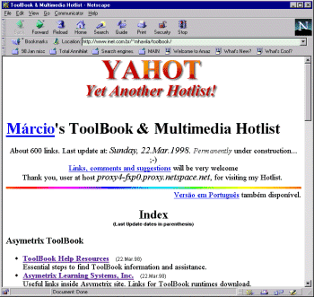
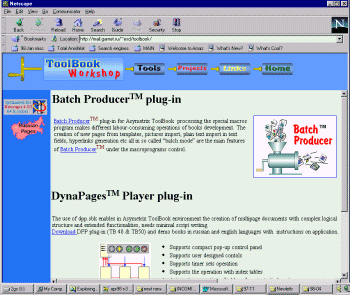
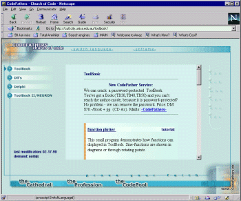
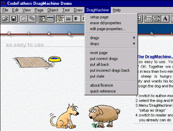
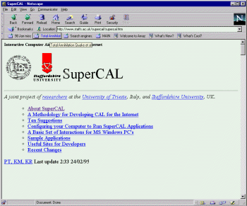
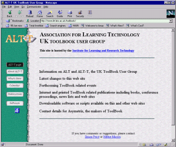
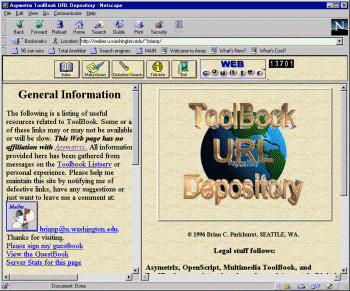
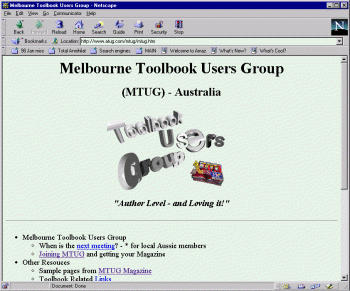
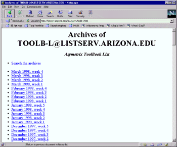

Australian Toolbook User Group


Marcio's ToolBook & Multimedia Hotlist

http://www.inet.com.br/~mhavila/toolbook/ http://www.inet.com.br/~mhavila/toolbook/tbk-util.shtml.en
This excellent site has links to all things Toolbook, as well as links to some more general multimedia authoring resources. The links seem up-to-date and comprehensive. Includes a step by step guide on how to solve your Toolbook authoring questions using internet resources. Highly recommended.
An example of some of the entries from this site's main index is as follows:
ToolBook Help Resources (12.Apr.98)
Essential steps to find ToolBook information and assistance.
Useful links inside Asymetrix site.
Links for ToolBook runtimes download.
ToolBook Related Sites (12.Apr.98)
ToolBook Utilities & Samples (21.Apr.98) A wide and comprehensive list of all kind of useful freeware, shareware, interesting ToolBook samples and commercial tools, extensions and utilities for ToolBook and multimedia authoring. E.g.
Xfer, ToolTips, Media Synch, Spreadsheet, TextTools, WaveMix tutorial, Tracker, OpenSock, QTVR, AutoSave, Script Explorer, Web Kiosk, SetDPI, Switch, Script removers, Disk/File info, splash-screen etc.
The ToolBook discussion list - TOOLB-L (12.Apr.98)
References of printed books about ToolBook. Links to courses, tutorials and papers concerning ToolBook available over the Internet.
HyperCourseware Developments in ToolBook
Courseware Display and Distribution
OpenScript Techniques for Improving User Interaction
Various papers from the Asymetrix OnLine Learning '97 seminar.
Authoring Tools sources - other authoring packages.
Dmitry Esikov’s Russian Toolbook

http://mail.garnet.ru/~esd/toolbook
This site hosts a Toolbook plug-in which assists in the automatic creation of Toolbook books based on templates etc. Here is a sample of the documentation:
"The use of dpp.sbk enables in Asymetrix ToolBook environment the creation of multipage documents with complex logical structure and extended functionalities. The structure of the tbk document is described by a set of cross references, reserved names and properties. DPP interprets the logical structure information and carries out all navigation actions in the current document.
Main features of DPP:
OpenSock for Toolbook
A free package that lets you write internet servers and clients totally in OpenScript without using dll's (other than winsock.dll) or vbx'es.
Church of code site

http://www.codefathers.de/main.htm
This site claims to be able to crack password-protected ToolBooks. If you've got a Book (TB30,TB40,TB50) and you can't reach the author-mode, because it is password-protected - They claim to be able to remove the password for a fee.
Also available at this site are some Toolbook 4 and above books that you can try out and study:
| Drag Machine |
|
| TextTools | This tool gives you various useful text functions. Text can exported and imported. (nice for translations). There is a richtext-editor with a fulltext-search inside and many more. |
| function plotter | Sine-functions are shown in diagrams or through rotating points. |
| Wavemix | The Wavemix Dll allows up to 8 audios to be played at once.
This example shows, how the Dll can be operated from ToolBook. The Dll is addressed with C-structures. |
| animation demo | This demonstration shows how to create pleasingly animations. Moving text fades in and out - flickerfree. |
| drive check | Information about computer drives can be checked with this Dll. For example, a certain CD-Rom can be sought. The serial number of the hard drive can be checked or altered and so on. |
After running a few of the books from this site, I was impressed by the attention to detail and professional quality graphics used.

Figure 37 - Of particular interest was the Drag & Drop application. An author level menu is used to program your graphic objects.
Drag operations are smooth and flowing. You can set up drop zones and when a graphic is dropped into a drop zone, it gently glides into place.
The latest version of Drag Machine is shareware and contains a complete quick-reference.TB40,TB50,TB60 - compatible.
Supercal Project

http://www.staffs.ac.uk/supercal/supercal.htm
SuperCAL is this site’s name for Interactive Computer Aided Learning materials designed for the Internet. This unfunded project attempts to present all that is needed to create or run SuperCAL applications, except for the
commercial authoring tools. This site provides software configurations, reusable CAL objects, a working methodology and links to other useful sites. Sample SuperCAL applications are also kept here or referenced.
The impetus for the SuperCAL Project came from the work of Ken Randall and Kevin Macken on a methodology for producing high-quality CAL rapidly using Asymetrix Toolbook and the Internet, and Paolo Tosolini's similar work configuring Multimedia Toolbook for the Internet, (the MM-WWW-PC Specification).
ALT-T U.K. User Group WWW

http://www.ilrt.bris.ac.uk/toolbook/
This site emails you a newletter every few months and has backissues on line.
Brain’s Website

http://weber.u.washington.edu/~brianp/
This is one of the oldest & best Toolbook sites, with useful links, tips and news. The ‘FAQ List (sort of)’ page lists common questions about Toolbook, where to get the latest patches and drivers, and more. Here is a sample of the table of contents for the faq page:
Toolbook listserv archives Dr. Bamberger's Listserv Archive Knowledge Base Tim Dutcher's Script Explorer John Hall's FAQ list Need a driver update? API Help TB50 VBX Bug Fix 3rd Party books on ToolBook Child Window in a Viewer Dynamic Array Bug Workaround Forward statement Discussion Adding Windows Style Help Using the PC-Speaker Driver Getting the Windows Directory ToolBook 3.0 (Bugs) AutoSave/Compact Book Script Magnify a Page in a Viewer VBX Controls in 4.0 clarification CBT Patch explanation Looping Attract Script Customizing CBT Question Shareware Clip DLL P.J. Burke's Script exporter (actual script) Autosizing Fields Transparent Viewers Tim Dutcher's Shareware Utils
There is also a useful page of Toolbook FTP Sites and Shareware Links, including a link to the
plus links to the commonly looked for Toolbook patches, general shareware graphics and sound utilities, help authoring tools plus miscellaneous authoring links.
A list of User groups around the world
This site hosts a list of user groups from all around the world, maintained by Paolo Tosolini from Asymetrix.
Did you know there are user groups in Africa, India, China, Malaysia, Japan, Singapore, Brazil, Peru', Argentina, Portugal, Germany, Spain, Denmark, France, Finland, Netherlands, Italy, UK, Australia and of course many in the U.S.A. itself?
Melbourne TUG - Australia

http://www.atug.com/mtug
This site has local information for Australian members plus details on the Author Agent project - an open standard for developing Toolbook Add-ons. Some free add-ons are available at this site.
The Toolbook List
Figure 38 - The ToolBook List, the oldest home of independent Toolbook discussions on the internet.
This site gives you access to the online Internet Toolbook discussions from the listserver - packaged as weeks of discussion. It also gives you information on subscribing to this mailing list and getting Toolbook discussions in your email (as digests or as individual emails)

http://listserv.arizona.edu/lsv/www/toolb-l.html
Figure 38a - You can access the weekly discussions onToolbook via this web page.
If you prefer accessing the discussion through a regular newsgroup browser, access your
normal news server and add the newsgroup
bit.listserv.toolb-l
To access thousands more tips offline - download Toolbook Knowledge Nuggets